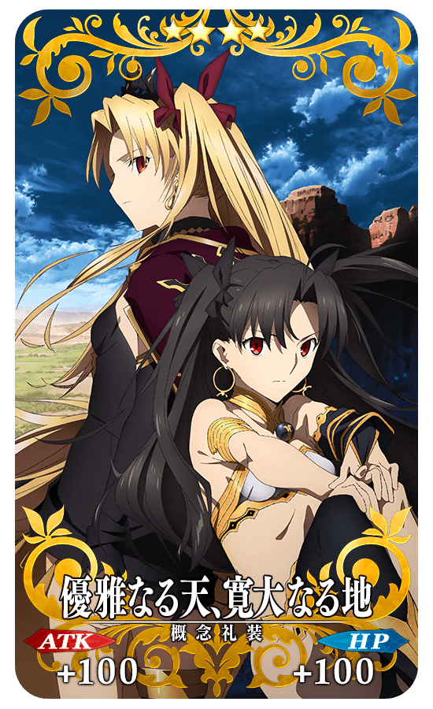

現在TV動畫「Fate/Grand Order -絕對魔獸戰線巴比倫尼亞-」好評放送中！
為了記念更加沸騰的放送，舉辦『TV動畫「Fate/Grand Order -絕對魔獸戰線巴比倫尼亞-」放送記念宣傳活動 第4彈』！
※本頁面皆為開發中圖片。會有與實際圖片相異的情況。
◆舉辦期間◆
2020年3月15日(日) 23:00～3月22日(日) 2:59
TV動畫「Fate/Grand Order-絕對魔獸戰線巴比倫尼亞-」概要
【節目名】
Fate/Grand Order -絕對魔獸戰線巴比倫尼亞-
【放送時間】
TV
・TOKYO MX / BS11 / 群馬テレビ / とちぎテレビ:每週六 22:30～
・MBS:每週六 26:08～
・AT-X:每週一 20:30～
リピート放送:每週三 12:30～/每週五 28:30～/每週日 25:30～
・北陸放送:每週五 24:55～
配信
・AbemaTV:每週六 22:30～ ・d動畫ストア / ニコニコ生放送 / ニコニコチャンネル:每週日 22:00～ ・Amazonプライム・ビデオ / バンダイチャンネル / Hulu / ビデオパス / J:COMオンデマンド メガパック / FOD / U-NEXT / 動畫放題 / GYAO! / ひかりTV / Video Market:每週二 11:00～ ・dTV:每週二 16:00～ ・Netflix:每週二 22:00～
※放送・配信時間配信時間可能因編成的情況而有所變更。
為了記念『TV動畫「Fate/Grand Order -絕對魔獸戰線巴比倫尼亞-」放送記念宣傳活動 第4彈』舉辦，實施特別登入獎勵。
在下述期間中合計6天內登入(1天算1次)的話，贈送宣傳活動限定的概念禮裝1張與聖晶石12個！
◆舉辦期間◆
2020年3月15日(日) 3:00～3月22日(日) 2:59
※在舉辦期間內合計6天內登入的話，可領取所有的登入獎勵。
◆贈送對象◆
2020年3月21日(六) 2:59前通過「特異點F 炎上汙染都市 冬木」的御主對象
※上述時間前，在管理室(ターミナル)畫面的關卡橫幅必須要有「CLEAR」的文字顯示。
| 登入次數 | 贈送內容 | |
|---|---|---|
| 第1次 | 【概念禮裝】 ★4(SR)優雅なる天、寛大なる地 1張 |
|
| 第2次 |

|
聖晶石 1個 |
| 第3次 |
|
聖晶石 2個 |
| 第4次 |
|
聖晶石 3個 |
| 第5次 |
|
聖晶石 3個 |
| 第6次 |
|
聖晶石 3個 |
※登入獎勵會在每天3:00配發。 ※合計6天內能領取，但根據成為贈送對象開始遊戲的時間點，可能無法到此上限。
◆TV動畫「Fate/Grand Order -絕對魔獸戰線巴比倫尼亞-」放送記念宣傳活動 第4彈限定概念禮裝◆
|  |
★★★★SR |
強化「★5(SSR)“山之翁”」的特別關卡「從者強化關卡」，在迦勒底之門永久追加。
不僅進行對象從者的強化，也可獲得聖晶石做為關卡通過報酬。
※請注意在從者強化關卡沒有文字冒險部份。
◆追加時間◆
2020年3月15日(日) 23:00～
◆開放條件◆
持有的強化對象從者，必須使其最終再臨。
※未持有對象從者的話，不會出現關卡。
※關卡沒有舉辦期限。
其他還有，追加強化關卡「★5(SSR)“山之翁”」所登場的期間限定『TV動畫「Fate/Grand Order -絕對魔獸戰線巴比倫尼亞-」放送記念宣傳活動 第4彈 Pick Up召喚(每日交替)』同時舉辦！
關於詳情，請自下述橫幅確認。
■TV動畫「Fate/Grand Order -絕對魔獸戰線巴比倫尼亞-」放送記念宣傳活動 第4彈 Pick Up召喚(每日交替)詳細情報